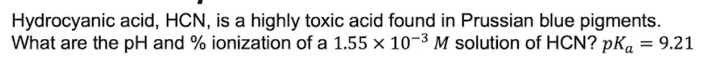
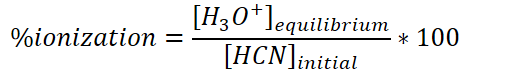
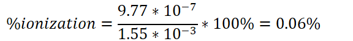
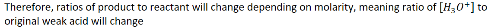
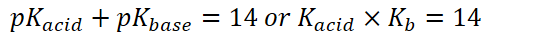
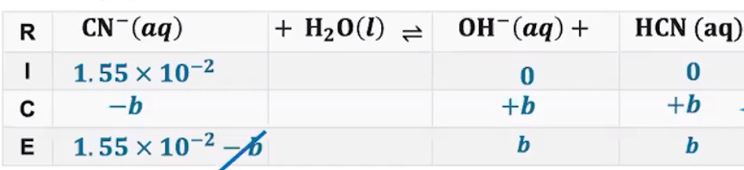

{width="12.333333333333334in" height="0.3541666666666667in"}
Same way to solve as equilibrium systems, except mole ratios are usually 1:1:1
Given pH and pOH are given AT EQUILIBRIUM
{width="4.104166666666667in" height="0.3541666666666667in"}
{width="8.666666666666666in" height="0.7708333333333334in"}
- {width="4.104166666666667in" height="0.34375in"}
- {width="2.8125in" height="0.34375in"}
- {width="3.71875in" height="0.65625in"}
- {width="8.65625in" height="0.7291666666666666in"}
- {width="7.270833333333333in" height="0.375in"}
- Only do this when not doing so would lead to a quadratic equation
- {width="6.15625in" height="0.6979166666666666in"}
- {width="10.75in" height="0.6979166666666666in"}
- {width="2.53125in" height="0.34375in"}
- {width="5.010416666666667in" height="0.3541666666666667in"}
- {width="4.979166666666667in" height="0.34375in"}
{width="5.34375in" height="0.7395833333333334in"}
What part of that original weak acid reacted to water and disassociated?
{width="6.0in" height="0.6979166666666666in"}
Percent ionization: what part of the original weak acid reacted with water and disassociated?
Depends on molarity
When solution is diluted, ALL molarities decrease
{width="10.135416666666666in" height="0.5625in"}
{width="11.90625in" height="0.6875in"}
As molarity (concentration) decreases, percent ionization increases
Molarity changes will affect the product (ions) more than the reactant (weak acid) because there are 2 products and 1 reactant
As molarity decreases, [products] decrease more than [reactants] decrease
Therefore, reaction will shift to form more product, creating more ions, so %ionization increases
And vice versa
Weak Base Equilibria
Solve the same way as weak acid equilibria except:
Attention needs to be paid to mole ratios
{width="3.96875in" height="0.3541666666666667in"}
{width="5.5625in" height="0.3333333333333333in"}
Remember: bases ACCEPT protons from water molecules forming hydroxide
{width="5.90625in" height="1.34375in"}